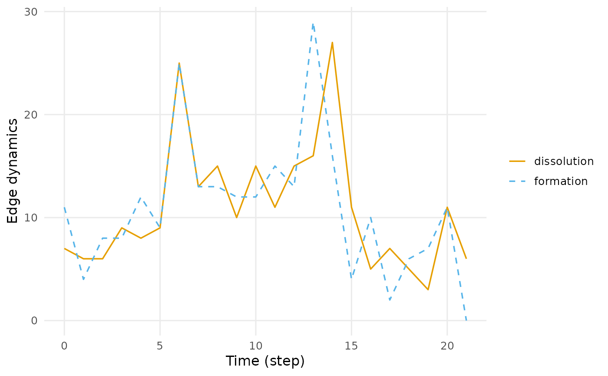

When relationships are born and when they die. In a static network every edge is present at once; here the turnover itself is the finding. A course typically shows formation front-loaded and dissolution piling up at the end, and a group that never dissolves an edge is behaving differently from one that constantly re-forms them.
Arguments
- dn
A temporal network from
dynet().- measure
One or more of
"formation"(spells beginning in the bin),"dissolution"(spells ending in the bin),"active"(spells alive during the bin),"new_pairs"(vertex pairs meeting for the first time), and"formation_fraction"(confirmed binary pair formations divided by their exact two-sided inactive risk set), or"dissolution_fraction"(confirmed binary pair dissolutions divided by their exact two-sided active risk set), or"formation_rate"(confirmed formations divided by exact integrated inactive eligible pair-time), or"dissolution_rate"(confirmed dissolutions divided by exact integrated active eligible pair-time).- sessions
How to treat sessions, as in
dyn_centrality().- start, end
First and last time at which to measure. Default to the observed range. A network built from dates may be addressed with dates.
- step
How often to measure. Defaults to the interval the network was built with.
- window
How much time each measurement covers. Defaults to
step, which tiles the period into disjoint bins. A larger value slides an overlapping window;0samples the network at each point in time."all"measures the whole observed period as one window, closed on the right so an event at the final instant is inside it; it cannot be combined withstep, and undersessions = "separate"or discontinuous observation it gives one window per session or observed component.- plot
Whether to draw the result as well as return it. Drawing is a side effect in the manner of
graphics::hist(): the verb still returns its tidy table, invisibly when it has drawn, soplot = TRUEsaves the wrappingplot()call without changing what comes back. Useplot()on the result when the figure needs arguments of its own.
Details
Formation and dissolution are counted inside each window, so overlapping
windows (window > step) count the same event more than once by design –
that is what a rolling total is. Setting window equal to step, the
default, gives disjoint counts that sum to the total turnover.
Explicitly onset-censored raw limits are not formations, and explicitly
terminus-censored limits are not dissolutions. A left-censored observed tie
is prior evidence for new_pairs; raw censor state never changes activity.
Formation fraction is defined only with window = 0. For a positive
half-open interval [s,e), its pre-batch state at t is
s < t <= e and its post-batch state is s <= t < e. These predicates are
binary-unioned per nonloop ordered pair or undirected dyad after the entire
timestamp batch. Points are absent on both sides. A pair enters risk only
when observation and both endpoints are eligible immediately before and
after t and the pair is inactive before. A formation is confirmed when it
is active after and at least one contributing positive raw spell has a known
onset at t. The ratio is in [0,1]; zero risk returns NA.
Duplicate, overlapping, or adjacent raw spells cannot multiply pair-state transitions. Observation and vertex boundaries are excluded by two-sided eligibility. Onset censoring suppresses confirmation but not state; terminus censoring, weights, loops, and point contacts do not contribute. Collapse erases labels, bounded authorizes within sessions before unioning each calendar pair, and separate returns session-local fractions.
Dissolution fraction is the dual exact-time quantity. For each nonloop pair,
let E- and E+ be binary-union state on the symbolic one-sided limits and
let L mean at least one positive raw spell ends exactly at the timestamp
with a known terminus. The numerator is Z * E- * (1 - E+) * L, where Z
requires two-sided observation and endpoint eligibility; the denominator is
sum(Z * E-), including pairs that remain active. Zero risk returns
NA_real_, while positive risk with no confirmed dissolution returns zero.
Censor flags do not change state: one known terminus confirms a disappearance
but an all-censored disappearance is unconfirmed. Duplicate, overlapping,
adjacent, and tied rows are unioned; points, loops, weights, onset censoring,
and administrative observation/activity boundaries do not create transitions.
Collapse erases labels, bounded unions authorized session-local states, and
separate reports local rows. Positive windows are rejected because T04 owns
dissolution rates.
Dissolution rate is the active-risk dual over a positive window. Its
numerator sums confirmed T02 binary pair dissolutions at included timestamp
batches; its denominator integrates exact eligible active nonloop pair-time
over observation, vertex, edge, and window change cells. Right-censored
termini retain state and exposure but do not confirm an event, while one
known duplicate suffices. Zero active exposure returns NA_real_; positive
exposure without a confirmed dissolution is zero. The unit is inverse
network time. It is not raw terminus intensity, spell-duration sum, or an
average of instantaneous fractions; positive windows are required and T04
owns this rate.
Formation rate is the positive-window counterpart. Its numerator sums the
confirmed T01 binary pair formations at each included timestamp, while its
denominator integrates exact inactive eligible nonloop pair-time over
change-point cells cut by the window, observation components, vertex
activity, and edge state. It is not an average of instantaneous fractions,
a raw-onset intensity, or an ever-observed-pair quantity. Zero exposure
returns NA_real_; positive exposure with no confirmed formation returns
zero. The unit is inverse network time and scales inversely with positive
time scaling. Points have zero exposure, onset censoring suppresses only
confirmation, and gap/boundary, duplicate, overlap, adjacency, loop,
weight, and session rules follow the exact T01 ledger. window = 0 is
rejected because T01 owns instant fractions.
References
Andersen, P. K., & Gill, R. D. (1982). Cox's regression model for counting processes: a large sample study. Annals of Statistics, 10, 1100-1120. doi:10.1214/aos/1176345976
Butts, C. T., Leslie-Cook, A., Krivitsky, P. N., & Bender-deMoll, S. (2024). networkDynamic: Dynamic Extensions for Network Objects, version 0.11.5. doi:10.32614/CRAN.package.networkDynamic
Examples
dn <- dynet(school_contacts)
events(dn)
#> # Edge dynamics (graph-level)
#> # 22 time points, 1 per bin | time in step
#> # measures: formation, dissolution
#> time measure value
#> 0 formation 11
#> 0 dissolution 7
#> 1 formation 4
#> 1 dissolution 6
#> 2 formation 8
#> 2 dissolution 6
#> 3 formation 8
#> 3 dissolution 9
#> 4 formation 12
#> 4 dissolution 8
#> 5 formation 9
#> 5 dissolution 9
#> # 32 more rows. summary() aggregates them; plot() draws them.
plot(events(dn, measure = c("formation", "dissolution")))

events(dn, measure = "formation_fraction", start = 1, end = 1,
window = 0)
#> # Formation transition fraction (graph-level)
#> # 1 time points, step 1, sampled at each point | time in step
#> time measure value
#> 1 formation_fraction 0
events(dn, measure = "dissolution_fraction", start = 1, end = 1,
window = 0)
#> # Dissolution transition fraction (graph-level)
#> # 1 time points, step 1, sampled at each point | time in step
#> time measure value
#> 1 dissolution_fraction 0
events(dn, measure = "formation_rate", start = 1, end = 2,
window = 1)
#> # Formation transition rate (graph-level)
#> # 2 time points, 1 per bin | time in step
#> time measure value
#> 1 formation_rate 0.02226924
#> 2 formation_rate 0.04470023
events(dn, measure = "dissolution_rate", start = 1, end = 2,
window = 1)
#> # Dissolution transition rate (graph-level)
#> # 2 time points, 1 per bin | time in step
#> time measure value
#> 1 dissolution_rate 2.521008
#> 2 dissolution_rate 1.980198